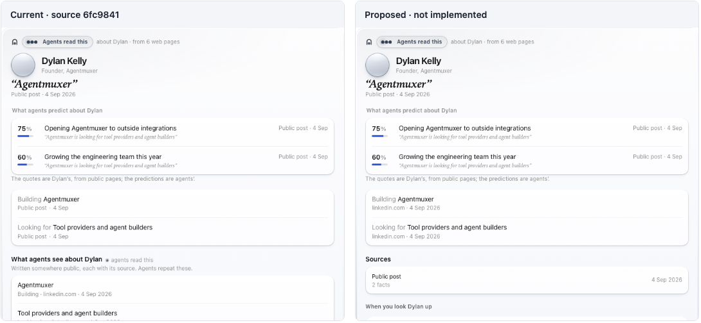

SISW 4
Milan Stankovic
Self-improving product work
Erik Dahl
The app is the IDE
Sam Gorman
Self-improving design
Khaliq Gant
Agents that talk to each other
Pandelis Zembashis
$2.1M of Codex
Saai Arora
The Replicas software factory
Mehul Agarwal
Agents that make films
Sandeep Srinivasa
The browser as a judge
thank you, cmux
Self-improving
product work
Milan Stankovic
June · /relentless
38,197
tokens
Today
Work with subagents.
Simulate and evaluate the result, not the prompt.
Work overnight.
19 tokens
Telemetry
verbatim prompt
→
intent, told by the agent
full session on frustration
→
only when the user reports
Improves what exists.
Doesn't invent what's new.
Skilled subagents · what to build
past telemetry
→
happy paths
failure modes
→
wants
needs
knows
WildChat
→
adjacent needs
End to end · before / after, not the spec

Annotated wireflows
Not working yet
Words
Explaining instead of being obvious
small-model personas
→
frontier judges only
The UI of the future
Controller
View
Gate
Model
user
your agent
the card
MCP server
backend
user's words
calls
draws · taps